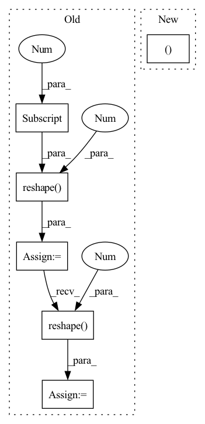

Pattern ID :3526
Before Change
def forward(self, input_dict, hidden_state, seq_lens):
inputs = input_dict["obs_flat"].float()
if "conv_layer" in self.custom_config["model_arch_args"]:
x = inputs.reshape(-1 , self.raw_state_dim[0], self.raw_state_dim[1], self.raw_state_dim[2] ) .permute(0, 3, 1, 2)
x = self.encoder(x)
x = torch.mean(x, (2, 3))
x = x.reshape( inputs.shape[0], -1 )
else:
x = self.encoder(inputs)
h = hidden_state[0].reshape(-1, self.hidden_state_size) // fake a hidden state no use
x = self.mlp(x)After Change
def forward(self, input_dict, hidden_state, seq_lens):
inputs = input_dict["obs_flat"].float()
if len(self.full_obs_space.shape) == 3: // 3D
inputs = inputs.reshape((-1In pattern: SUPERPATTERN
Frequency: 4
Non-data size: 6
Instances Fragment ID: 17613645
Project Name: replicable-marl/marllib
Commit Name: b8e61fa5031b72cb8ce2321212fe3908f3468b83
Time: 2023-03-01
Author: hhhusiyi@163.com
File Name: marllib/marl/models/zoo/mlp/jointQ_mlp.py
M Class Name: JointQ_MLP
N Class Name: JointQ_MLP
M Method Name: forward(4)
N Method Name: forward(4)
M Parent Class: nn.Module,TorchModelV2
N Parent Class: nn.Module,TorchModelV2
M File Name: marllib/marl/models/zoo/mlp/jointQ_mlp.py
N File Name: marllib/marl/models/zoo/mlp/jointQ_mlp.py
M Start Line: 104
M End Line: 111
N Start Line: 59
N End Line: 62
Before Change
def forward(self, input_dict, hidden_state, seq_lens):
inputs = input_dict["obs_flat"].float()
if "conv_layer" in self.custom_config["model_arch_args"]:
x = inputs.reshape(-1 , self.raw_state_dim[0], self.raw_state_dim[1], self.raw_state_dim[2] ) .permute(0, 3, 1,
2)
x = self.encoder(x)
x = torch.mean(x, (2, 3))
x = x.reshape( inputs.shape[0], -1 )
else:
x = self.encoder(inputs)
h_in = hidden_state[0].reshape(-1, self.hidden_state_size)
h = self.rnn(x, h_in)After Change
def forward(self, input_dict, hidden_state, seq_lens):
inputs = input_dict["obs_flat"].float()
if len(self.full_obs_space.shape) == 3: // 3D
inputs = inputs.reshape((-1 Fragment ID: 17613646
Project Name: replicable-marl/marllib
Commit Name: b8e61fa5031b72cb8ce2321212fe3908f3468b83
Time: 2023-03-01
Author: hhhusiyi@163.com
File Name: marllib/marl/models/zoo/rnn/jointQ_rnn.py
M Class Name: JointQ_RNN
N Class Name: JointQ_RNN
M Method Name: forward(4)
N Method Name: forward(4)
M Parent Class: nn.Module,TorchModelV2
N Parent Class: nn.Module,TorchModelV2
M File Name: marllib/marl/models/zoo/rnn/jointQ_rnn.py
N File Name: marllib/marl/models/zoo/rnn/jointQ_rnn.py
M Start Line: 104
M End Line: 112
N Start Line: 57
N End Line: 60
Before Change
def forward(self, x: torch.Tensor) -> torch.Tensor:
batch_size = x.shape[0]
x = x.permute(0, 2, 1).reshape(-1 , x.shape[1] )
codes = self.encode(x)
quantized = self.decode(codes)
diff = (x - quantized).pow(2).mean()
quantized = quantized + x - x.detach()
if self.training:
self.replace_dead_codes(x)
onehot = F.one_hot(codes, self.size).float()
usage = onehot.sum(0)
targets = (x.T @ onehot / usage).T
targets = torch.where(torch.isnan(targets), self.embedding,
targets)
ema_inplace(self.embedding, targets, self.ema)
ema_inplace(self.usage, usage, self.ema)
quantized = quantized.reshape(
batch_size,
-1,
quantized.shape[-1],
).permute(0, 2, 1)
codes = codes.reshape( batch_size, -1 )
return quantized, diff.mean(), codes[:, None]
class ResidualVQ(nn.Module):After Change
embed_normalized = self.embed_avg / cluster_size.unsqueeze(1)
self.embed.data.copy_(embed_normalized)
return quantize, embed_ind
class VectorQuantization(nn.Module):
Vector quantization implementation. Fragment ID: 17613637
Project Name: caillonantoine/rave
Commit Name: b58cba5d330c227f2122bc07fcbf7ed068eb91be
Time: 2023-01-24
Author: caillon@ircam.fr
File Name: rave/quantization.py
M Class Name: VQ
N Class Name: EuclideanCodebook
M Method Name: forward(2)
N Method Name: forward(2)
M Parent Class: nn.Module
N Parent Class: nn.Module
M File Name: rave/quantization.py
N File Name: rave/quantization.py
M Start Line: 68
M End Line: 97
N Start Line: 163
N End Line: 187